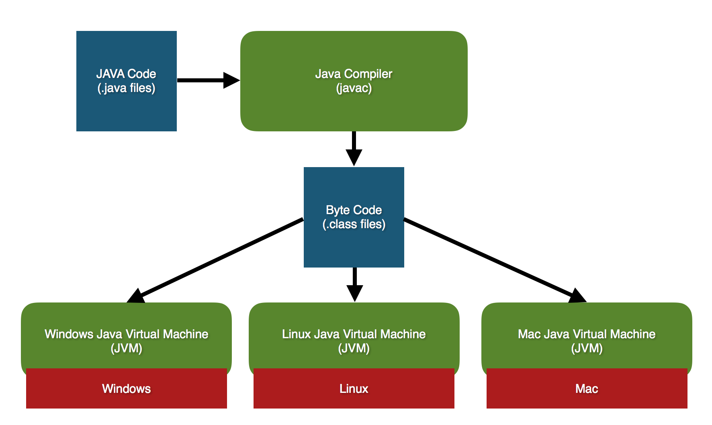

01 Prepare : Reading
Java Basics
Objectives
Understand the history behind Java.
Learn a little about the Java ecosystem.
Set up your computer to compile and run Java code.
Java
The Java language was designed in the 1990's. A significant goal in its design was to avoid some of the problems people encountered using C++. Some key differences between Java and C++ are:
Automatic Memory Management
In C++, you often have to manually allocate memory using new, storing it in a pointer, and freeing it using delete.
In Java, you only use new when creating an object instance. When the object instance falls out of scope, it is automatically deleted by the Garbage Collector.
No Multiple Inheritance
In C++, a class could have multiple parent classes. In Java, a class can only have a single parent class.
Interfaces
Java uses a concept called interfaces to provide many of the benefits of multiple inheritance, with none of the drawbacks. We'll learn more about interfaces in week 03.
Write Once, Run Anywhere
One of the key features of Java is that code you write for Java is "platform independent". This means that code you write should work the same way on Windows, Mac, Linux, etc...
Everything is a Class
In C++, you could write object-oriented code, or procedural code. In Java, every function must belong to a class.
How Java Works
With C++, you wrote code in .cpp files, compiled them into an executable file containing machine code using g++, then ran the executable. Since C++ files are compiled into machine code, they will only run on the same kind of computer you compiled it on. So, if you compiled it on a Linux computer, then copied the executable to your Windows computer, you would find that it wouldn't run there. This is because the machine code that Linux uses is different than the machine code that Windows uses.
Since one of Java's goals is "Write Once, Run Anywhere", compiling and running code in Java follows a different process.
Write code in
.javafiles.Compile the
.javafiles into.classfiles using the Java Compiler.Execute the class files using the Java Virtual Machine.
Compiling Java Code
In order to compile Java code, you need to install the JDK, or Java Development Kit.
The Java Development Kit contains a tool called javac. This tool is used to compile .java files much the same way that g++ is used to compile C++ files:
javac HelloWorld.java
However, instead of getting an executable, you get one or more .class files. These files contain bytecode. Unlike machine code, bytecode cannot be executed directly. To run it, we need to use another program called the Java Virtual Machine.
Running Java Programs
The Java Virtual Machine (or JVM), is a program that acts as a translator. It converts the bytecode contained in the .class files into the machine code needed by the computer. It does this in real time, while the program is running. This process is often called JIT, or Just-in-Time Compilation.
In order to obtain the JVM for their computer, a user must install the Java Runtime Environment or JRE. The Windows JVM converts Java bytecode into Windows machine code. The Linux JVM converts Java bytecode into Linux machine code. There are JVMs for nearly every type of computer.
Once you've compiled your Java code, you can run it using the java command line tool. This launches the JVM for your computer, and uses it to execute your class file.
java HelloWorld
Note that if you install the Java Development Kit (JDK) the JRE is also included, so you won't need to install that separately.
Java's main() Function
One of the differences between Java and C++ is that every function in Java must belong to a class. This includes the main() function. Consider this simple Java program:
// HelloWorld.java
public class HelloWorld {
public static void main(String[] args) {
System.out.println("Hello World!");
}
}
Some things to note:
In Java, it is conventional to put each class in its own file. The class name should be "Pascal-Cased", meaning that each word in the class name begins with a capital letter.
In our example, the
main()function belongs to the HelloWorld class. It must be marked aspublic staticand have a return type ofvoid.Unlike in C++, Java requires
main()to always accept command-line parameters. They are passed in a single argument calledargsas an array of strings.This code is equivalent:
// Java System.out.println("Something");// C++ cout << "Something" << endl;
To compile our java program, we use the javac command-line tool, followed by the name of the file:
javac HelloWorld.java
To execute the file, we launch the JVM using the java command-line tool, followed by the name of the class that contains the main() function:
java HelloWorld
Note that we use the name of the class, not the name of the file that contains the class.
Reading Quiz
Don't forget to take the Reading Quiz in I-Learn. This quiz can be taken as many times as you like, but you must score at least 90% to pass. If you fail the quiz, review the relevant parts of the reading and try again.
One of the quiz questions is a "deep thought" question. The answer to this question won't come directly from the reading, but will require you to think deeply about what you've learned from the reading.